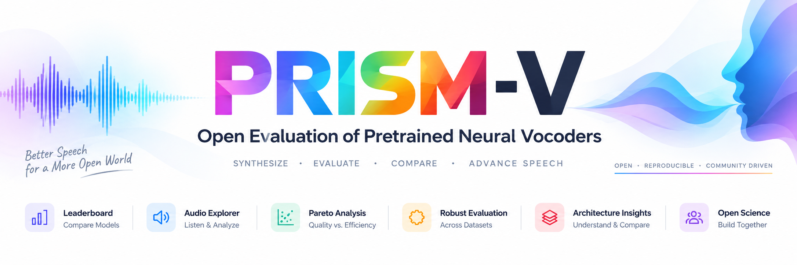

Open Evaluation of Pretrained Neural Vocoders · Ranked by PRISM-V Score
The 🤗 PRISM-V Leaderboard evaluates open-source and pretrained neural vocoders on English speech across diverse acoustic conditions, generative architectures, and edge deployment profiles.
Traditional neural vocoder evaluations predominantly report PESQ and MCD exclusively on clean, single-speaker studio recordings (e.g., LJSpeech). In production speech synthesis and voice conversion, however, practitioners deploy models on diverse voices, accented speech, and real-world noisy audio across hardware constrained to sub-realtime latencies.
PRISM-V establishes a comprehensive, zero-shot, training-free benchmark evaluating 15 pretrained vocoder architectures across four English acoustic corpora and five core dimensions: Perceptual quality, Reconstruction fidelity, Intelligibility preservation, Speaker identity, and Model edge efficiency.
Models scoring >4.4 PESQ on clean LJSpeech (e.g. BigVGAN-v2, PeriodWave) show variable degradation on mobile microphone noise (Free_ST) and accented speech (VCTK). Cross-corpus evaluation is required for true generalization.
Modern flow matching models (Flow2GAN, WaveFM) and Brownian Bridge SDEs (BridgeVoC) compress diffusion generation into 1 to 4 steps, matching 30-step diffusion fidelity at 12–35× real-time throughput.
Fourier / iSTFT ConvNeXt models (Vocos) and pseudo-inverse GANs (FreeV) achieve >300× throughput with under 400 MB peak VRAM, unlocking viable on-device streaming neural synthesis on edge hardware.
Navigate directly to interactive components to inspect empirical metrics, listen to audio samples, or configure custom model rankings.
If you use this benchmark, evaluated checkpoints, or codebase in your scientific research, please cite:
@misc{purohit2026prismv,
author = {Ravindrakumar M. Purohit and Hemant A. Patil},
title = {PRISM-V: A Multidimensional Evaluation of Pretrained Neural Vocoders for Speech Synthesis},
year = {2026},
howpublished = {\url{https://iamshreeji-copy2.github.io/open_vocoder_leaderboard/}},
note = {Open neural vocoder evaluation leaderboard}
}